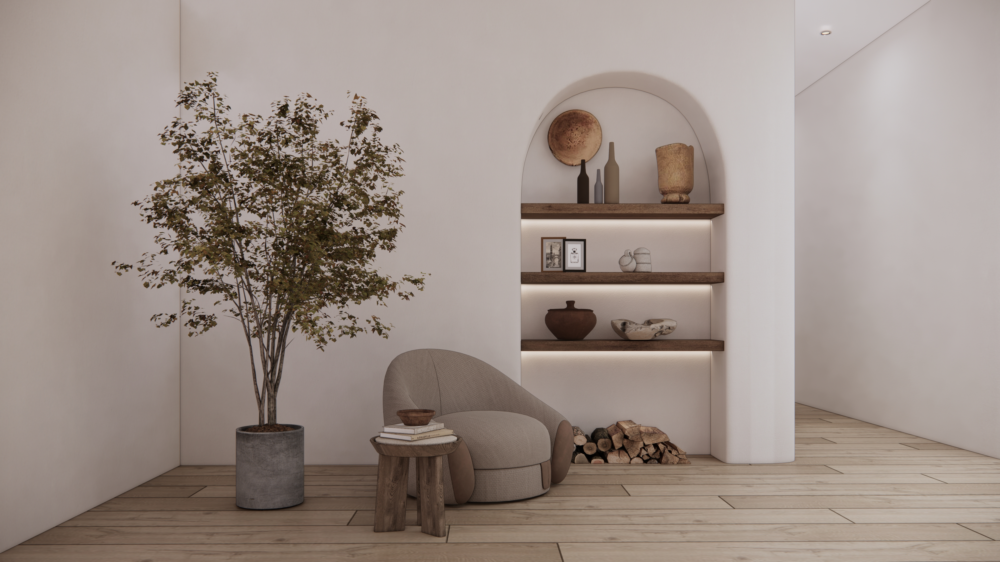
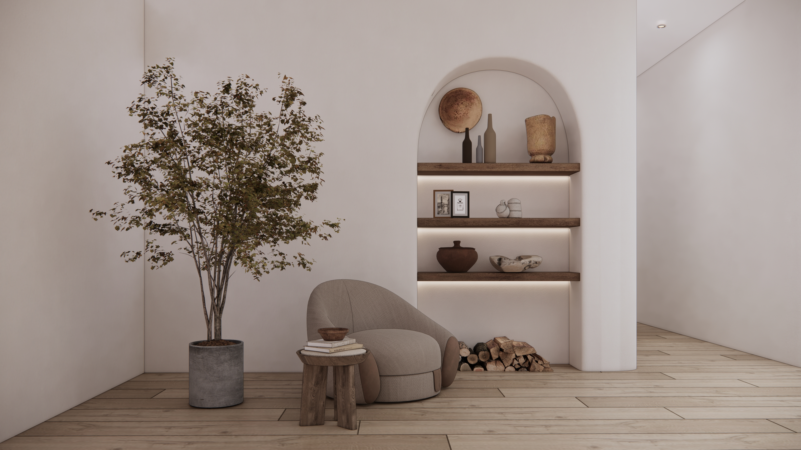

Inchara Reddy's Home
Harmony Between Indoor and Outdoor Spaces
A notable aspect of this interior design is the seamless connection between indoor and outdoor spaces. The large windows offer panoramic views of the surrounding environment, blurring the boundaries between the interior and exterior.
The incorporation of potted plants and organic accents like the wooden stool and ceramic vases further reinforces this harmony with nature. The neutral color palette and minimalist furnishings create a cohesive flow, allowing the outdoor scenery to take center stage and become an integral part of the overall design aesthetic. This harmonious relationship between the interior spaces and the natural world fosters a sense of tranquility and respite from the hustle and bustle of modern life.
 

Colors
The color palette is mostly neutral and subdued, with various shades of beige, gray, and white dominating the spaces. This creates a calming and serene atmosphere.
Materials
Wood is a prominent material used for the flooring, furniture, and accents. The warm tones and natural textures of wood add an earthy and organic feel to the spaces. Textiles like curtains, rugs, and upholstery feature a mix of solid colors and subtle patterns, adding depth and visual interest without being overwhelming. Stone and ceramic elements are also present, such as the decorative bowl and vases, introducing earthy tones and textures.
Style
The overall style is minimalist, with clean lines, simple forms, and a lack of excessive ornamentation. This creates a sense of spaciousness and allows the materials and natural elements to take center stage. The furniture pieces are low-profile and sleek, with a focus on functionality and comfort. The furniture pieces are low-profile and sleek, with a focus on functionality and comfort. Built-in shelving and niches add storage and display opportunities while maintaining a streamlined look.Large windows allow ample natural light to flow into the spaces, further enhancing the organic and airy feel.
Ready to get started?
For any inquiries, consultations, or to discuss your next interior design project, please don't hesitate to get in touch with us!